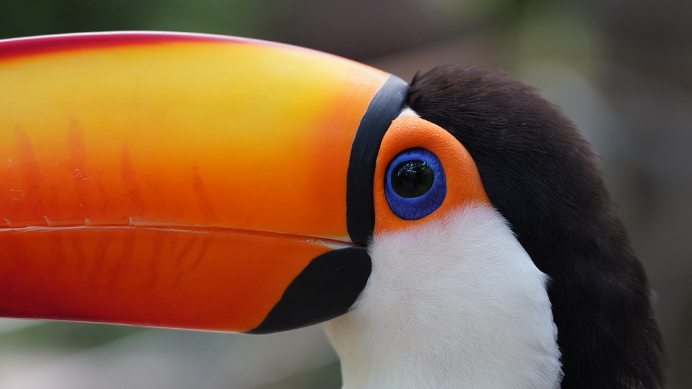

Os tucanos possuem um bico grande e colorido. Embora se alimentem principalmente de frutos, também consomem insetos, cobras, rãs, lagartos e ovos de outras aves.
Peso
660g
Tamanho
60cm
Tempo de vida
15 A 20 ANOS
Hábito
DIURNO


